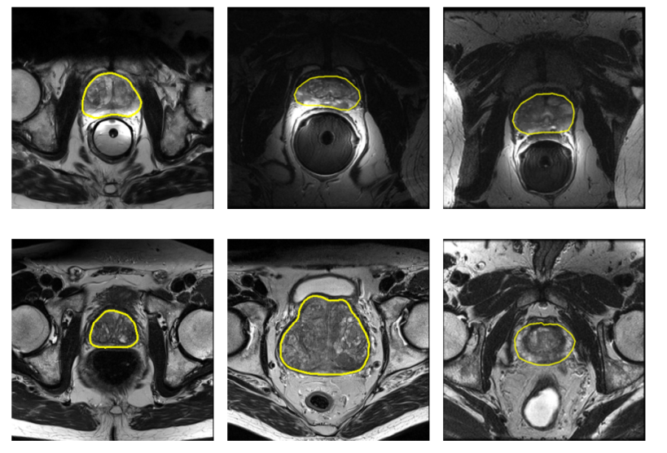
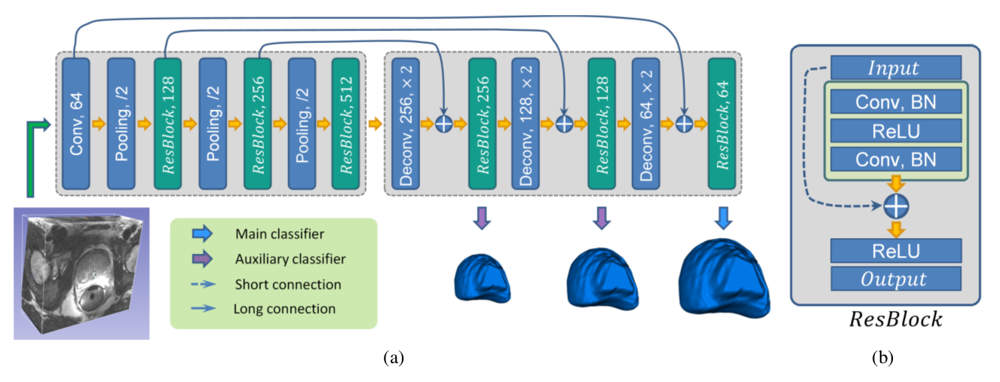
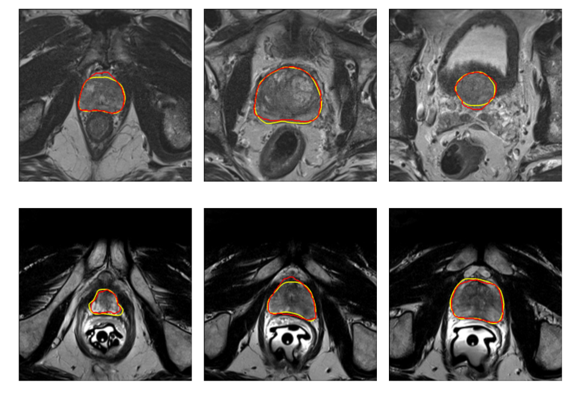
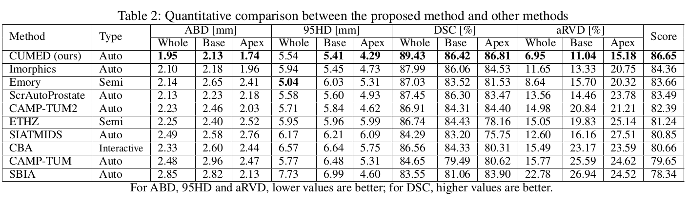
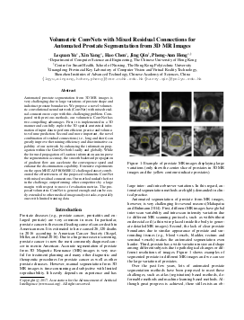

Lequan Yu1 Xin Yang1 Hao Chen1 Jing Qin2 Pheng Ann Heng1
1The Chinese Univeristy of Hong Kong 2The Hong Kong Polytechnic University
|  |
Example of prostate MR images displaying large variations (only show the center slice of prostates in 3D MR images and the yellow contours indicate prostates). |
Abstract
Automated prostate segmentation from 3D MR images is very challenging due to large variations of prostate shape and indistinct prostate boundaries. We propose a novel volumetric convolutional neural network (ConvNet) with mixed residual connections to cope with this challenging problem. Compared with previous methods, our volumetric ConvNet has two compelling advantages. First, it is implemented in a 3D manner and can fully exploit the 3D spatial contextual information of input data to perform efficient, precise and volume-to-volume prediction. Second and more important, the novel combination of residual connections (i.e., long and short) can greatly improve the training efficiency and discriminative capability of our network by enhancing the information propagation within the ConvNet both locally and globally. While the forward propagation of location information can improve the segmentation accuracy, the smooth backward propagation of gradient flow can accelerate the convergence speed and enhance the discrimination capability. Extensive experiments on the open MICCAI PROMISE12 challenge dataset corroborated the effectiveness of the proposed volumetric ConvNet with mixed residual connections. Our method ranked the first in the challenge, outperforming other competitors by a large margin with respect to most of evaluation metrics. The proposed volumetric ConvNet is general enough and can be easily extended to other medical image analysis tasks, especially ones with limited training data.
Method
|  |
(a) The architecture of the proposed volumetric ConvNet. The number in each box represents the number of feature maps and all convolutional layers contain 3×3×3 filter kernels. (b) The illustration of one residual block. |
Results
|

Qualitative segmentation results of case 4 (first row) and case 22 (second row) at the apex(left), center (middle) and base (right) of the prostate in testing dataset. The yellow and red contours indicate the ground truth and our segmentation results. More results can be found in challenge website. |
|

Quantitative comparison between the proposed method and other methods. Complete results can be found in challenge website. |
Downloads
|  | "Volumetric ConvNets with Mixed Residual Connections for Automated Prostate Segmentation from 3D MR Images", AAAI 2017 Lequan Yu, Xin Yang, Hao Chen, Jing Qin, Pheng Ann Heng. |
Last update: Feb., 2017